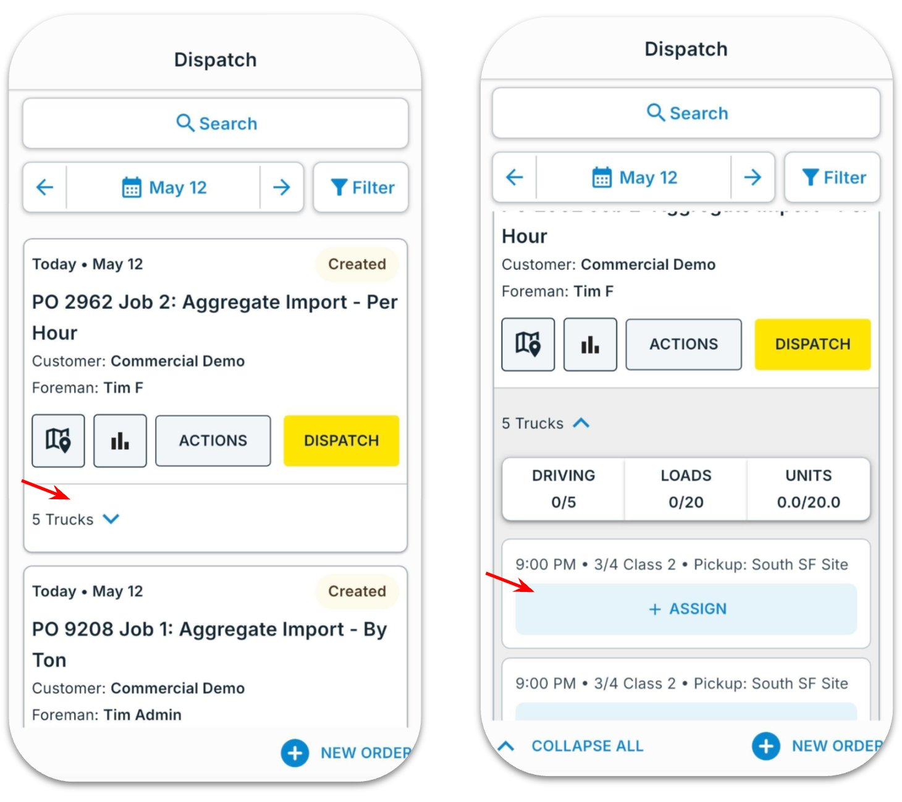
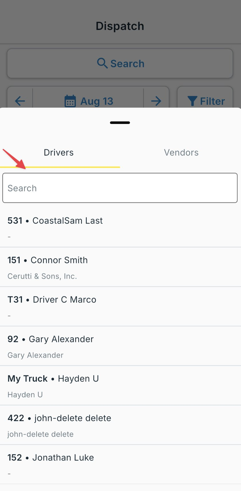
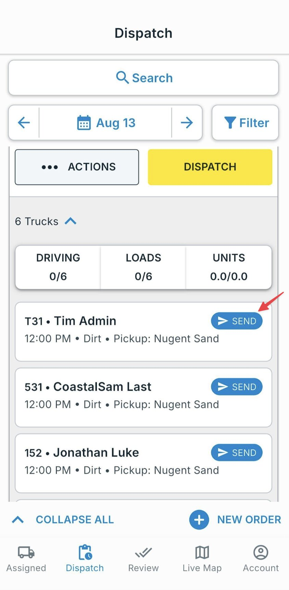
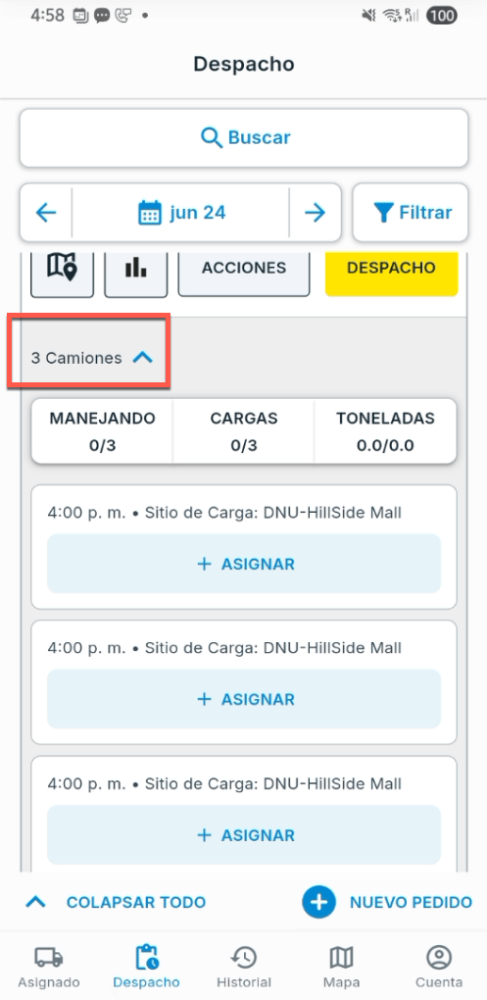
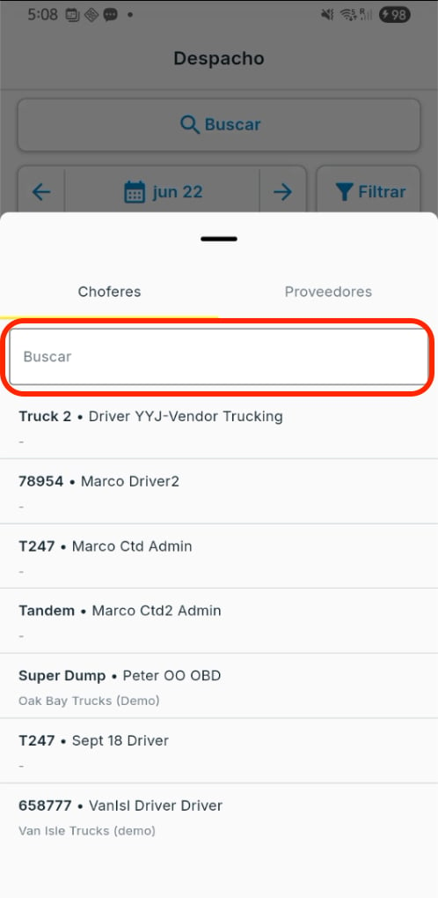
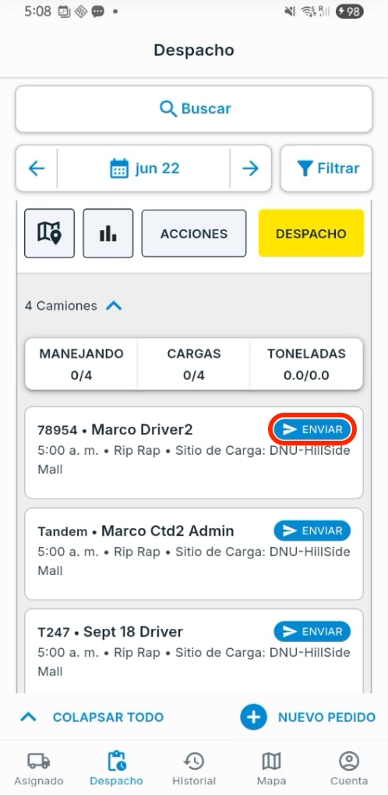

Welcome to the Dispatch Guide. How a job gets from your board to your driver's phone: assigning to your own drivers or a vendor, on web and mobile.
One board Every order, job, and driver in one place.
Assign in seconds Driver or vendor, on web or mobile.
Live status Watch each load move Accepted → Completed.
1
What's inside this guide 1 The board & modes Dispatcher 2 Dispatch on web Dispatcher 3 Dispatch on mobile Dispatcher 4 Driver receives Driver 5 Tips & support Everyone
The dispatch board & modes What you dispatch, how the board looks, the three dispatch modes, and the pre-flight checklist.
1
What you dispatch A Project is the container; an Order is the daily slice you dispatch; you assign and send the jobs inside an order.
Concept Role in dispatch Project Holds the customer, sites, materials, and rates Order The day's work: trucks, start time, target loads/hours Job One truck's assignment in an order: what you send to a driver
2
The dispatch view Each order shows its status, truck count, and per-job rows. Each job moves along this flow:
Accepted → To Pickup → At Pickup → Loaded → To Dropoff → At Dropoff → Unloaded → In Review → Completed
3
Dispatch modes Mode Who hauls it Assign panel When Regular Your own driver Driver Your employee drivers and trucks Direct An Owner-Operator you dispatch Driver A single-truck hauler whose truck you assign Hot A vendor who sub-dispatches Vendor Multi-truck vendor; their dispatcher picks
⚠️ Hot needs an accepted Vendor connection; a Direct Owner-Operator must be shared to you. Check Settings → Vendors and Drivers.
4
Before you dispatch 1 Work exists : a project and at least one order for the day.2 Trucks & drivers set up : drivers invited, trucks created, default trucks paired.3 Connections confirmed (if using vendors): Vendor accepted and Owner-Operators shared to you.
Dispatch from the web The step-by-step assign → send → monitor flow, with real screenshots.
Assign, configure, send, and monitor from the web dashboard. Numbered markers on each screenshot match the steps.
1
Assign a driver (or vendor) 1 Assign : opens the Driver / Vendor picker on the row.2 Driver : one of your drivers (Regular) or an Owner-Operator (Direct). Search by name, phone, or truck.3 Vendor : hand to a hauling company that sub-dispatches (Hot).2
Bulk assign (optional) 1 Click the Bulk Assign (persons) icon at top right. 2 Use + to set the vendor's number of trucks. 3 Click Assign All to assign every selected job at once. 3
Configure & send Hover and click Edit to confirm sites, truck/trailer, date, and rates; Submit to save. Then Send on a row, or Send All Jobs at the top.
⚡ “Send All Jobs” dispatches every assignment. Double-check the list. Drivers are notified instantly.
4
Monitor Follow the Status of each job; advance it with the arrow and follow trucks on the Live Map.
Accepted → To Pickup → At Pickup → Loaded → To Dropoff → At Dropoff → Unloaded → In Review → Completed
Dispatch from mobile Dispatch from the Tread app when you are away from your desk.
The same dispatch from the app, useful away from your desk. Open the Dispatch tab.
1 Tap the order's truck count to expand, then + Assign . 2 Search a driver by name or truck number and tap. 3 Tap Send : instant push; the driver accepts and starts from their phone. 


Your driver receives the job What the driver sees and does on their phone after you send.
Once you send, the driver gets the job on their phone. Here is what they do:
1
View the request New offers appear in the driver's Assigned tab under New Tread Requests . Tap View Request .
2
Accept the job The driver reviews pickup, drop-off, and material, then taps Accept . Until then you see Pending .
3
Start the job The driver taps Start . Their location appears on your Live Map and the status moves.
Tips & support What helps most, and how to reach support.
1
Tips & common pitfalls ⚠️ Use Driver for your own drivers and Vendor for haulers who sub-dispatch. Picking wrong is the #1 reason a driver never gets the load.
Driver didn't get the load? If it's Assigned (not Sent ), hit Send . If sent but Pending , they haven't accepted, or lack app/permissions.Hot jobs show the driver's name only after the vendor assigns one of their drivers.Set a default truck on each driver: fewer clicks, fewer mistakes. 2
Need help? 💬
In-app chat Tap the chat icon in the web app, or open Account on mobile.
⭐
Help Center docs.tread.ai
📞
Phone or text 1-888-558-7323
Bienvenido a la Guía de Despacho. Cómo un trabajo llega de tu tablero al teléfono de tu chofer: asignar a tus propios choferes o a un proveedor, en web y móvil.
Un solo tablero Cada orden, trabajo y chofer en un solo lugar.
Asigna en segundos Chofer o proveedor, en web o móvil.
Estado en vivo Mira cada carga avanzar de Accepted a Completed.
1
Qué hay en esta guía 1 Tablero y modos Despachador 2 Despacho web Despachador 3 Despacho móvil Despachador 4 El chofer recibe Chofer 5 Consejos y ayuda Todos
El tablero y los modos de despacho Qué despachas, cómo se ve el tablero, los tres modos de despacho y la lista previa.
1
Qué despachas Un Proyecto es el contenedor; una Orden es la porción diaria que despachas; asignas y envías los trabajos dentro de una orden.
Concepto Rol en el despacho Proyecto Contiene el cliente, los sitios, los materiales y las tarifas Orden El trabajo del día: camiones, hora de inicio, cargas/horas objetivo Trabajo La asignación de un camión en una orden: lo que envías a un chofer
2
El tablero de despacho Cada orden muestra su estado, el conteo de camiones y las filas por trabajo. Cada trabajo avanza por este flujo:
Accepted → To Pickup → At Pickup → Loaded → To Dropoff → At Dropoff → Unloaded → In Review → Completed
3
Modos de despacho Modo Quién lo acarrea Panel Assign Cuándo Regular Tu propio chofer Driver Tus choferes y camiones Directo Un Owner-Operator que despachas Driver Un transportista de un camión que asignas Hot Un proveedor que subdespacha Vendor Proveedor de varios camiones; su despachador elige
⚠️ Hot necesita una conexión de proveedor aceptada; un Owner-Operator Directo debe estar compartido contigo. Revisa Settings → Vendors y Drivers.
4
Antes de despachar 1 El trabajo existe : un proyecto y al menos una orden para el día.2 Camiones y choferes configurados : choferes invitados, camiones creados, camiones predeterminados emparejados.3 Conexiones confirmadas (si usas proveedores): proveedor aceptado y Owner-Operators compartidos.
Despacha desde la web El flujo paso a paso de asignar → enviar → monitorear, con capturas reales.
Asigna, configura, envía y monitorea desde el tablero web. Los marcadores numerados en cada captura corresponden a los pasos.
1
Asigna un chofer (o proveedor) 1 Assign : abre el selector Driver / Vendor en la fila.2 Driver : un chofer tuyo (Regular) o un Owner-Operator (Directo). Busca por nombre, teléfono o camión.3 Vendor : entrega a una empresa de acarreo que subdespacha (Hot).2
Asignación masiva (opcional) 1 Haz clic en el ícono Bulk Assign (personas) arriba a la derecha. 2 Usa + para fijar el número de camiones del proveedor. 3 Haz clic en Assign All para asignar todos a la vez. 3
Configura y envía Pasa el cursor y haz clic en Edit para confirmar sitios, camión/remolque, fecha y tarifas; Submit para guardar. Luego Send en una fila, o Send All Jobs arriba.
⚡ “Send All Jobs” despacha todas las asignaciones pendientes. Revisa la lista. Los choferes son notificados al instante.
4
Monitorea Sigue el Status de cada trabajo; avánzalo con la flecha y sigue los camiones en el Live Map.
Accepted → To Pickup → At Pickup → Loaded → To Dropoff → At Dropoff → Unloaded → In Review → Completed
Despacha desde el móvil Despacha desde la app de Tread cuando estás lejos del escritorio.
El mismo despacho desde la app, útil lejos del escritorio. Abre la pestaña Despacho.
1 Toca el conteo de camiones de la orden para expandir, luego + Asignar . 2 Busca un chofer por nombre o número de camión y tócalo. 3 Toca Enviar : notificación push inmediata; el chofer acepta e inicia desde su teléfono. 


El chofer recibe el trabajo Lo que el chofer ve y hace en su teléfono después de que envías.
Una vez que envías, el chofer recibe el trabajo en su teléfono. Esto es lo que hace:
1
Ver la solicitud Las ofertas aparecen en la pestaña Asignado bajo Nuevas Solicitudes de Tread . Toca Ver Solicitud .
2
Aceptar el trabajo El chofer revisa carga, descarga y material, luego toca Aceptar . Hasta entonces ves Pending .
3
Iniciar el trabajo El chofer toca Iniciar . Su ubicación aparece en tu Live Map y el estado avanza.
Consejos y ayuda Lo que más ayuda, y cómo contactar a soporte.
1
Consejos y errores comunes ⚠️ Usa Driver para tus choferes y Vendor para acarreadores que subdespachan. Elegir mal es la causa #1 de que un chofer no reciba la carga.
¿El chofer no recibió la carga? Si está en Assigned (no Sent ), falta Send . Si está enviado y aparece Pending , aún no acepta o no tiene app/permisos.Los trabajos Hot muestran el nombre del chofer solo después de que el proveedor asigna a uno de sus choferes. Asigna un camión predeterminado a cada chofer: menos clics, menos errores. 2
¿Necesitas ayuda? 💬
Chat en la app Toca el ícono de chat en la web, o abre Account en móvil.
⭐
Centro de ayuda docs.tread.ai/es